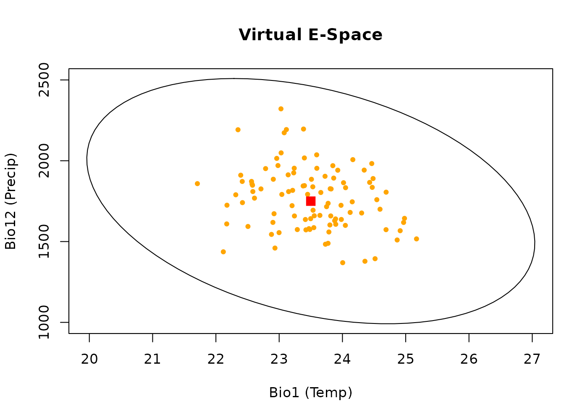
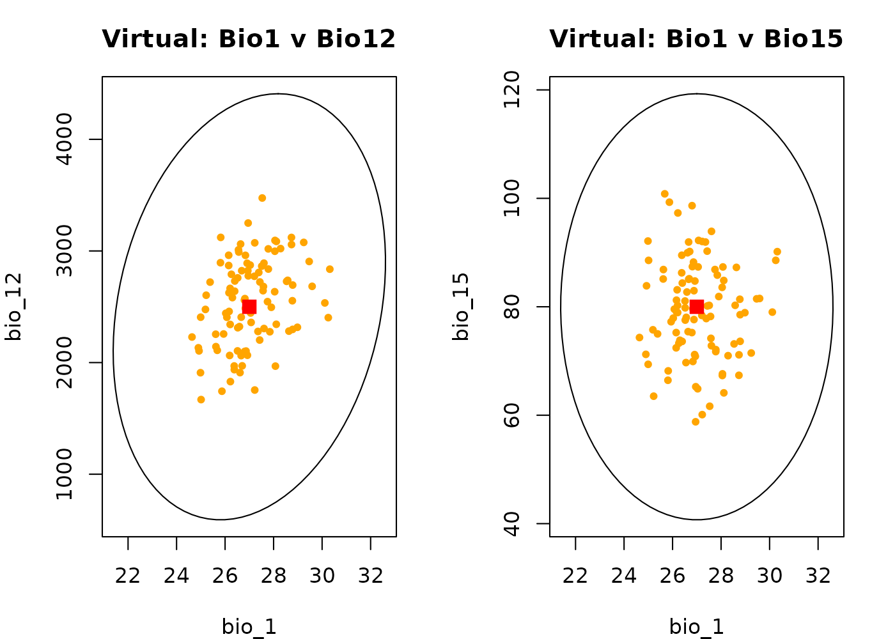
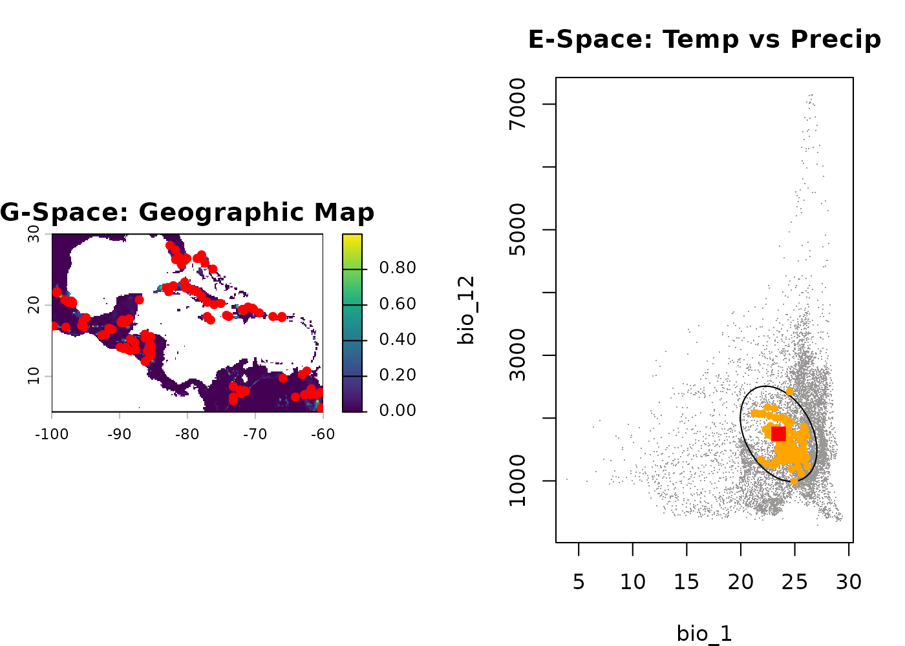
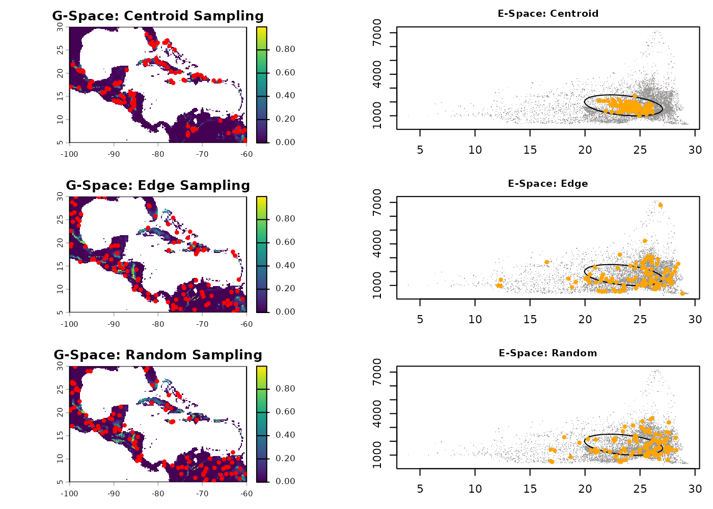
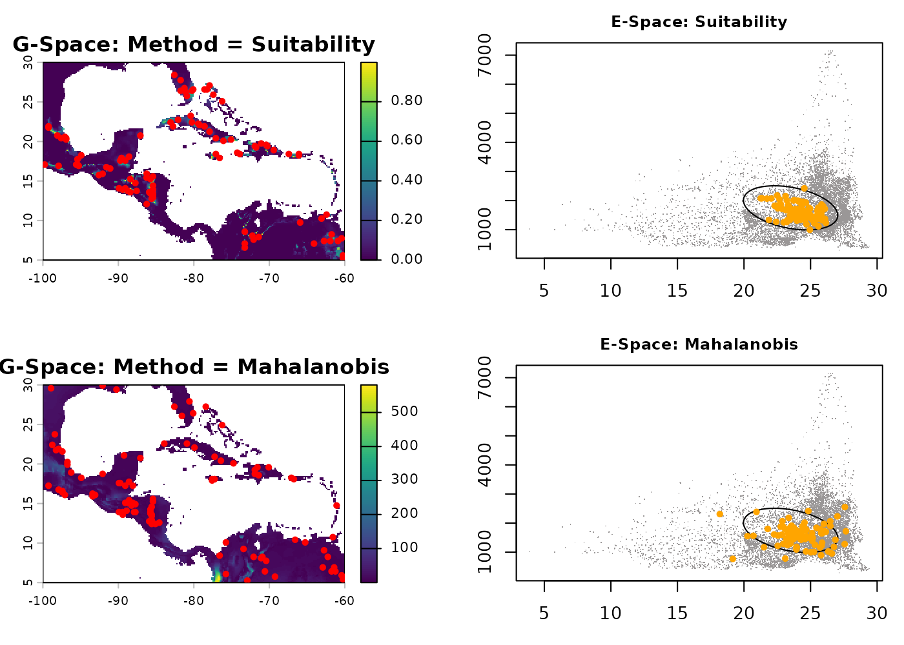
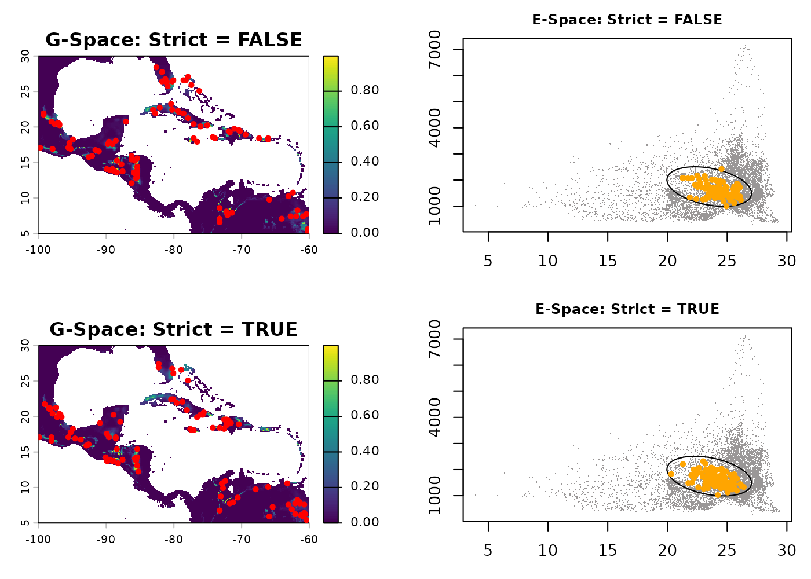
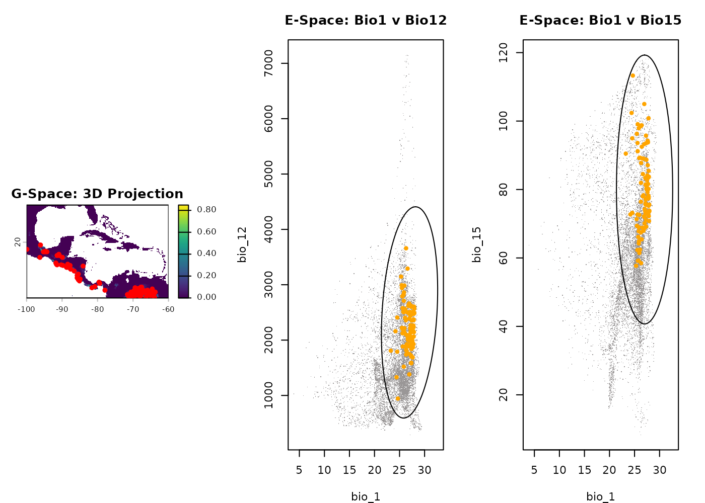
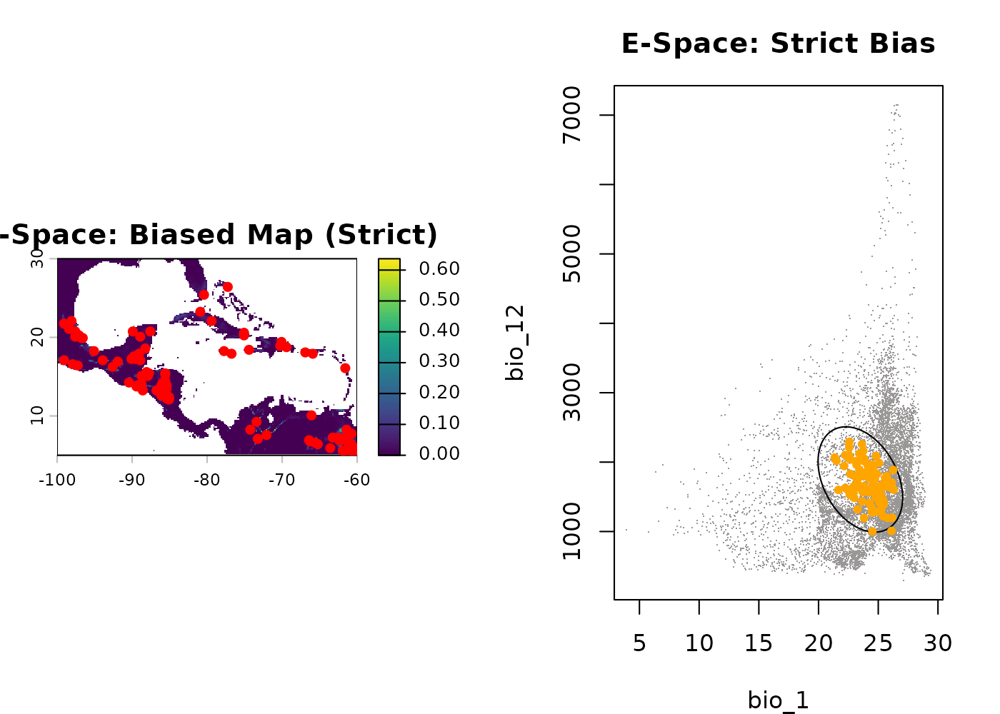
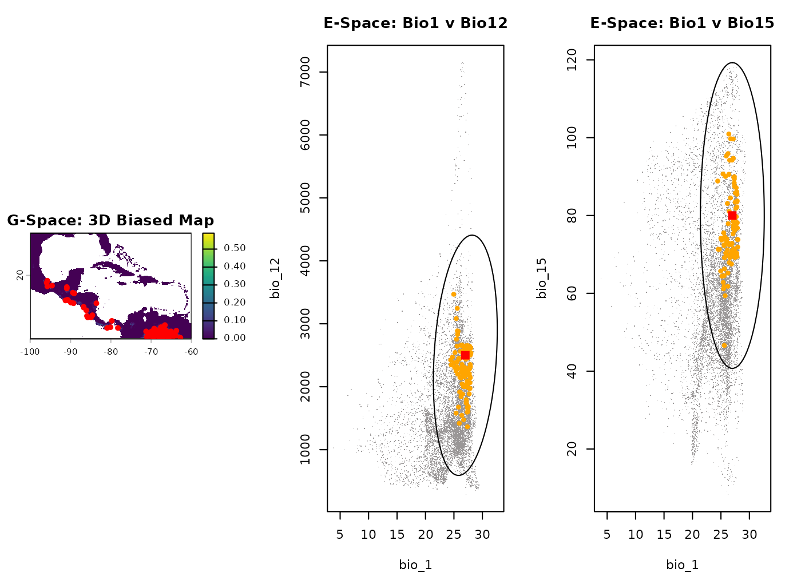

Summary
- Description
- Getting ready
- Part 1: Virtual Data
- Part 2: Spatially-Explicit Occurrence Data
- Part 3: Biased Occurrence Data
- Save and export
Description
The nicheR package allows you to simulate how a species
might be distributed by generating synthetic occurrence data from
continuous prediction surfaces. This vignette progresses through three
levels of complexity:
Virtual Data: Simulating species entirely within Environmental Space (E-Space), bypassing geographic rasters to test theoretical concepts.
Geographic Occurrence Data: Acting as a “virtual ecologist” to generate presence points across a physical landscape (G-Space) based on theoretical preferences.
Biased Occurrence Data: Introducing real-world collection bias (e.g., ninghttime light, proximity to roads, species richness, land use land cover) to see how human sampling effort distorts our view of a species’ niche.
Getting ready
First, we load nicheR and terra, alongside
our pre-built fundamental niches and prediction layers. We will not be
building models from scratch here; instead, we rely on data created in
previous vignettes.
# Load packages
library(nicheR)
library(terra)
#> terra 1.9.11
# 1. Load environmental background raster
bios <- terra::rast(system.file("extdata", "ma_bios.tif", package = "nicheR"))
# 2. Load pre-calculated reference niches
data("ref_ellipse", package = "nicheR") # 2D Niche (Bio1, Bio12)
data("example_sp_4", package = "nicheR") # 3D Niche (Bio1, Bio12, Bio15)
# 3. Load pre-calculated virtual backgrounds (E-Space only)
pred_virt_2d <- read.csv(system.file("extdata", "predictions_virt.csv", package = "nicheR"))
pred_virt_3d <- read.csv(system.file("extdata", "predictions_virt_3d.csv", package = "nicheR"))
# 4. Load pre-calculated geographic prediction surfaces
pred_2d <- terra::rast(system.file("extdata", "predictions_rast.tif", package = "nicheR"))
pred_3d <- terra::rast(system.file("extdata", "predictions_3d_rast.tif", package = "nicheR"))
# 5. Load pre-calculated biased prediction surfaces
# (Habitat Suitability * Accessibility Bias)
bias_2d <- terra::rast(system.file("extdata", "applied_bias_rast.tif", package = "nicheR"))
bias_3d <- terra::rast(system.file("extdata", "applied_bias_3d_rast.tif", package = "nicheR"))Part 1: Virtual Data
Virtual species are highly useful for controlled, purely theoretical
experiments in quantitative ecology. Because the
virtual_data() function generates points purely based on
mathematical distributions, these points do not possess spatial
coordinates (Longitude/Latitude). They exist exclusively in
E-Space.
We will use the pre-calculated virtual backgrounds
(pred_virt_2d and pred_virt_3d) loaded during
our setup phase. These data frames contain 1,000 theoretical background
points that have already been scored for suitability.
Basic generation
The sample_virtual_data() function acts as the
non-spatial twin to sample_data(). It picks “occurrences”
from our virtual background.
occ_virt_basic <- sample_virtual_data(
n_occ = 100,
object = ref_ellipse,
virtual_prediction = pred_virt_2d,
prediction_layer = "suitability",
seed = 123
)
#> Starting: sample_virtual_data()
#> Warning in resolve_prediction(virtual_prediction, prediction_layer):
#> 'prediction' is a data.frame, and it is missing 'x' and 'y', results wont show
#> geographical connections.
#> Done: sampled 100 points.
head(occ_virt_basic)
#> bio_1 bio_12 Mahalanobis suitability suitability_trunc
#> 369 23.89412 1606.865 0.35049855 0.8392478 0.8392478
#> 640 24.48426 1889.806 1.52756876 0.4658999 0.4658999
#> 430 23.47108 1579.717 0.53955996 0.7635475 0.7635475
#> 168 24.51566 1393.877 2.19468357 0.3337571 0.3337571
#> 766 23.07951 2173.194 2.92031454 0.2321998 0.2321998
#> 552 23.53559 1693.781 0.05302895 0.9738339 0.9738339Visualizing virtual data in 2D
Since virtual data lacks Geography, we visualize it exclusively in E-Space. The gray dots are our 1,000 background points. The orange dots are the 100 sampled individuals. Notice they cluster toward the center (red square) because higher suitability exists there.
plot_ellipsoid(ref_ellipse, dim = c(1, 2), pch = ".", col_bg = "#9a9797",
xlab = "Bio1 (Temp)", ylab = "Bio12 (Precip)", main = "Virtual E-Space")
add_data(occ_virt_basic, x = "bio_1", y = "bio_12", pts_col = "orange", pch = 20)
add_data(as.data.frame(t(ref_ellipse$centroid)), x = "bio_1", y = "bio_12", pts_col = "red", pch = 15, cex = 1.5)
Three-dimensional virtual example
We can simulate pure virtual points across a 3-dimensional niche. The workflow is identical: generate a 3D background, score its suitability, and sample from it.
# Sample 100 virtual occurrences from the 3D background
occ_virt_3d <- sample_virtual_data(
n_occ = 100,
object = example_sp_4,
virtual_prediction = pred_virt_3d,
prediction_layer = "suitability",
seed = 123
)
#> Starting: sample_virtual_data()
#> Warning in resolve_prediction(virtual_prediction, prediction_layer):
#> 'prediction' is a data.frame, and it is missing 'x' and 'y', results wont show
#> geographical connections.
#> Done: sampled 100 points.
# Visualize across multiple dimensions in E-Space
par(mfrow = c(1, 2), mar = c(4, 4, 3, 2))
plot_ellipsoid(example_sp_4, dim = c(1, 2), pch = ".", col_bg = "#9a9797", main = "Virtual: Bio1 v Bio12")
add_data(occ_virt_3d, x = "bio_1", y = "bio_12", pts_col = "orange", pch = 20)
add_data(as.data.frame(t(example_sp_4$centroid)), x = "bio_1", y = "bio_12", pts_col = "red", pch = 15, cex = 1.5)
plot_ellipsoid(example_sp_4, dim = c(1, 3), pch = ".", col_bg = "#9a9797", main = "Virtual: Bio1 v Bio15")
add_data(occ_virt_3d, x = "bio_1", y = "bio_15", pts_col = "orange", pch = 20)
add_data(as.data.frame(t(example_sp_4$centroid)), x = "bio_1", y = "bio_15", pts_col = "red", pch = 15, cex = 1.5)
Part 2: Spatially-Explicit Occurrence Data
While virtual data exists solely in climate theory,
sample_data() projects the niche onto a physical landscape
raster. This generates spatial occurrences with physical coordinates
(Longitude/Latitude) while simultaneously extracting their underlying
environmental values. As a result, we can visualize and analyze these
occurrences in both Geographic Space (G-Space) and Environmental Space
(E-Space) at the same time.
Basic generation in 2D
Let’s generate 100 geographically grounded occurrences using the default suitability layer of our 2D prediction raster.
occ_geo_basic <- sample_data(
n_occ = 100,
prediction = pred_2d,
prediction_layer = "suitability",
seed = 123
)
#> Starting: sample_data()
#> Done: sampled 100 points.
par(mfrow = c(1, 2), mar = c(4, 4, 3, 2))
# 1. Geographic Space
terra::plot(pred_2d[["suitability"]], main = "G-Space: Geographic Map")
points(occ_geo_basic[, c("x", "y")], pch = 20, col = "red", cex = 1.2)
# 2. Environmental Space
plot_ellipsoid(ref_ellipse, background = as.data.frame(bios[[c("bio_1", "bio_12")]]),
dim = c(1, 2), pch = ".", col_bg = "#9a9797", main = "E-Space: Temp vs Precip")
add_data(occ_geo_basic, x = "bio_1", y = "bio_12", pts_col = "orange", pch = 20)
add_data(as.data.frame(t(ref_ellipse$centroid)), x = "bio_1", y = "bio_12", pts_col = "red", pch = 15, cex = 1.5)
Effect of the sampling argument
The sampling argument determines the spatial bias of the
selection probability.
centroid: Species strongly prefers optimal conditions (huddles near the center).edge: Species is pushed into marginal environments (repelled to boundaries).random: Uniform distribution across suitable habitats.
occ_cent <- sample_data(100, pred_2d, "suitability", sampling = "centroid", seed = 123)
#> Starting: sample_data()
#> Done: sampled 100 points.
occ_edge <- sample_data(100, pred_2d, "suitability", sampling = "edge", seed = 123)
#> Starting: sample_data()
#>
#> Done: sampled 100 points.
occ_rand <- sample_data(100, pred_2d, "suitability", sampling = "random", seed = 123)
#> Starting: sample_data()
#>
#> Done: sampled 100 points.
par(mfrow = c(3, 2), mar = c(3, 3, 2, 1), cex.main = 0.9)
# Centroid
terra::plot(pred_2d[["suitability"]], main = "G-Space: Centroid Sampling"); points(occ_cent[, 1:2], pch = 20, col = "red")
plot_ellipsoid(ref_ellipse, background = as.data.frame(bios[[c("bio_1", "bio_12")]]), dim = c(1, 2), pch = ".", col_bg = "#9a9797", main = "E-Space: Centroid")
add_data(occ_cent, x = "bio_1", y = "bio_12", pts_col = "orange", pch = 20)
# Edge
terra::plot(pred_2d[["suitability"]], main = "G-Space: Edge Sampling"); points(occ_edge[, 1:2], pch = 20, col = "red")
plot_ellipsoid(ref_ellipse, background = as.data.frame(bios[[c("bio_1", "bio_12")]]), dim = c(1, 2), pch = ".", col_bg = "#9a9797", main = "E-Space: Edge")
add_data(occ_edge, x = "bio_1", y = "bio_12", pts_col = "orange", pch = 20)
# Random
terra::plot(pred_2d[["suitability"]], main = "G-Space: Random Sampling"); points(occ_rand[, 1:2], pch = 20, col = "red")
plot_ellipsoid(ref_ellipse, background = as.data.frame(bios[[c("bio_1", "bio_12")]]), dim = c(1, 2), pch = ".", col_bg = "#9a9797", main = "E-Space: Random")
add_data(occ_rand, x = "bio_1", y = "bio_12", pts_col = "orange", pch = 20)
Effect of the method argument
The method argument controls the underlying mathematical
weight used to draw the samples.
suitability: Weights linearly based on the 0-1 habitat suitability index.mahalanobis: Weights based on the multivariate environmental distance, creating a stricter concentration in optimal environments.
occ_meth_suit <- sample_data(100, pred_2d, "suitability", method = "suitability", seed = 123)
#> Starting: sample_data()
#> Done: sampled 100 points.
occ_meth_maha <- sample_data(100, pred_2d, "Mahalanobis", method = "mahalanobis", seed = 123)
#> Starting: sample_data()
#>
#> Done: sampled 100 points.
par(mfrow = c(2, 2), mar = c(3, 3, 2, 1), cex.main = 0.9)
# Suitability
terra::plot(pred_2d[["suitability"]], main = "G-Space: Method = Suitability"); points(occ_meth_suit[, 1:2], pch = 20, col = "red")
plot_ellipsoid(ref_ellipse, background = as.data.frame(bios[[c("bio_1", "bio_12")]]), dim = c(1, 2), pch = ".", col_bg = "#9a9797", main = "E-Space: Suitability")
add_data(occ_meth_suit, x = "bio_1", y = "bio_12", pts_col = "orange", pch = 20)
# Mahalanobis
terra::plot(pred_2d[["Mahalanobis"]], main = "G-Space: Method = Mahalanobis"); points(occ_meth_maha[, 1:2], pch = 20, col = "red")
plot_ellipsoid(ref_ellipse, background = as.data.frame(bios[[c("bio_1", "bio_12")]]), dim = c(1, 2), pch = ".", col_bg = "#9a9797", main = "E-Space: Mahalanobis")
add_data(occ_meth_maha, x = "bio_1", y = "bio_12", pts_col = "orange", pch = 20)
Effect of the strict argument
By default (strict = FALSE), generating occurrences
allows points to fall slightly outside the strict boundaries of the
fundamental niche to simulate sink populations. Setting
strict = TRUE (using a truncated layer) establishes a hard
boundary.
occ_lax <- sample_data(100, pred_2d, "suitability", strict = FALSE, seed = 123)
#> Starting: sample_data()
#> Done: sampled 100 points.
occ_strict <- sample_data(100, pred_2d, "suitability_trunc", strict = TRUE, seed = 123)
#> Starting: sample_data()
#>
#> Done: sampled 100 points.
par(mfrow = c(2, 2), mar = c(3, 3, 2, 1), cex.main = 0.9)
# Lax
terra::plot(pred_2d[["suitability"]], main = "G-Space: Strict = FALSE"); points(occ_lax[, 1:2], pch = 20, col = "red")
plot_ellipsoid(ref_ellipse, background = as.data.frame(bios[[c("bio_1", "bio_12")]]), dim = c(1, 2), pch = ".", col_bg = "#9a9797", main = "E-Space: Strict = FALSE")
add_data(occ_lax, x = "bio_1", y = "bio_12", pts_col = "orange", pch = 20)
# Strict
terra::plot(pred_2d[["suitability_trunc"]], main = "G-Space: Strict = TRUE"); points(occ_strict[, 1:2], pch = 20, col = "red")
plot_ellipsoid(ref_ellipse, background = as.data.frame(bios[[c("bio_1", "bio_12")]]), dim = c(1, 2), pch = ".", col_bg = "#9a9797", main = "E-Space: Strict = TRUE")
add_data(occ_strict, x = "bio_1", y = "bio_12", pts_col = "orange", pch = 20)
Three-Dimensional Example
Generating occurrences for a 3-dimensional niche operates exactly the same way. We simply pass the 3D prediction raster and view the outputs across multiple axes (e.g., Temperature vs. Precipitation, and Temperature vs. Seasonality).
occ_geo_3d <- sample_data(100, pred_3d, "suitability", seed = 123)
#> Starting: sample_data()
#> Done: sampled 100 points.
par(mfrow = c(1, 3), mar = c(4, 4, 3, 2))
terra::plot(pred_3d[["suitability"]], main = "G-Space: 3D Projection")
points(occ_geo_3d[, c("x", "y")], pch = 20, col = "red", cex = 1.2)
plot_ellipsoid(example_sp_4, background = as.data.frame(bios[[c("bio_1", "bio_12", "bio_15")]]), dim = c(1, 2), pch = ".", col_bg = "#9a9797", main = "E-Space: Bio1 v Bio12")
add_data(occ_geo_3d, x = "bio_1", y = "bio_12", pts_col = "orange", pch = 20)
plot_ellipsoid(example_sp_4, background = as.data.frame(bios[[c("bio_1", "bio_12", "bio_15")]]), dim = c(1, 3), pch = ".", col_bg = "#9a9797", main = "E-Space: Bio1 v Bio15")
add_data(occ_geo_3d, x = "bio_1", y = "bio_15", pts_col = "orange", pch = 20)
Part 3: Biased Occurrence Data
In the real world, species occurrence data is heavily influenced by human accessibility. If a model is trained on biased data, it will predict where the observers go, rather than where the species lives.
Using sample_biased_data(), we can draw points from a
raster that has already been mathematically multiplied by a bias layer
(e.g., nighttime light, distance to roads) to simulate this real-world
distortion.
Basic biased generation in 2D
Once the spatial points are generated, we must use
terra::extract() to pull the underlying climate values so
we can plot them in E-Space and observe the distortion.
occ_bias_xy <- sample_biased_data(
n_occ = 100,
prediction = bias_2d,
prediction_layer = "suitability_biased_direct",
strict = FALSE,
seed = 123
)
#> Starting: sample_biased_data()
#> Done: sampled 100 points from biased prediction layer
# Extract environmental data at these coordinates to view E-space distortion
occ_bias_env <- terra::extract(bios, occ_bias_xy[, c("x", "y")])
par(mfrow = c(1, 2), mar = c(4, 4, 3, 2))
plot(bias_2d[["suitability_biased_direct"]], main = "G-Space: Biased Map")
points(occ_bias_xy[, c("x", "y")], pch = 20, col = "red", cex = 1.2)
plot_ellipsoid(ref_ellipse, background = as.data.frame(bios[[c("bio_1", "bio_12")]]), dim = c(1, 2), pch = ".", col_bg = "#9a9797", main = "E-Space: Distorted Niche")
add_data(occ_bias_env, x = "bio_1", y = "bio_12", pts_col = "orange", pch = 20)
add_data(as.data.frame(t(ref_ellipse$centroid)), x = "bio_1", y = "bio_12", pts_col = "red", pch = 15, cex = 1.5)Notice the Distortion: Because observers only sampled accessible areas, the orange dots are dragged away from the optimal centroid (red square) and pushed into marginal climates.
Important Note: Why are there no
sampling or method arguments?
{#bias-no-sampling}
You might notice that sample_biased_data() is missing
the sampling and method arguments found in
sample_data().
This is mathematically intentional! In biased sampling, the prediction layer values themselves define exactly where points are drawn from. The raster acts as a direct, literal probability surface. Overlaying an artificial “edge” or “centroid” preference via an argument would undermine the spatial collection bias (e.g., roads) we are trying to simulate.
Effect of the biased strict argument
While we don’t control sampling strategies, we can control
whether occurrences are allowed in zero-probability/NA cells. Setting
strict = TRUE acts as a strict firewall, removing any
NA and zero-valued pixels prior to pulling samples.
# strict = TRUE ensures sampling ONLY happens in explicitly positive bias areas
occ_bias_strict_xy <- sample_biased_data(100, bias_2d, "suitability_biased_direct", strict = TRUE, seed = 123)
#> Starting: sample_biased_data()
#> Done: sampled 100 points from biased prediction layer
occ_bias_strict_env <- terra::extract(bios, occ_bias_strict_xy[, c("x", "y")])
par(mfrow = c(1, 2), mar = c(4, 4, 3, 2))
plot(bias_2d[["suitability_biased_direct"]], main = "G-Space: Biased Map (Strict)")
points(occ_bias_strict_xy[, c("x", "y")], pch = 20, col = "red", cex = 1.2)
plot_ellipsoid(ref_ellipse, background = as.data.frame(bios[[c("bio_1", "bio_12")]]), dim = c(1, 2), pch = ".", col_bg = "#9a9797", main = "E-Space: Strict Bias")
add_data(occ_bias_strict_env, x = "bio_1", y = "bio_12", pts_col = "orange", pch = 20)
Three-Dimensional Biased Example
Finally, let’s look at biased sampling on a 3-dimensional niche
(example_sp_4).
occ_bias_3d_xy <- sample_biased_data(100, bias_3d, "suitability_biased_direct", seed = 123)
#> Starting: sample_biased_data()
#> Done: sampled 100 points from biased prediction layer
occ_bias_3d_env <- terra::extract(bios, occ_bias_3d_xy[, c("x", "y")])
par(mfrow = c(1, 3), mar = c(4, 4, 3, 2))
plot(bias_3d[["suitability_biased_direct"]], main = "G-Space: 3D Biased Map")
points(occ_bias_3d_xy[, c("x", "y")], pch = 20, col = "red", cex = 1.2)
plot_ellipsoid(example_sp_4, background = as.data.frame(bios[[c("bio_1", "bio_12", "bio_15")]]), dim = c(1, 2), pch = ".", col_bg = "#9a9797", main = "E-Space: Bio1 v Bio12")
add_data(occ_bias_3d_env, x = "bio_1", y = "bio_12", pts_col = "orange", pch = 20)
add_data(as.data.frame(t(example_sp_4$centroid)), x = "bio_1", y = "bio_12", pts_col = "red", pch = 15, cex = 1.5)
plot_ellipsoid(example_sp_4, background = as.data.frame(bios[[c("bio_1", "bio_12", "bio_15")]]), dim = c(1, 3), pch = ".", col_bg = "#9a9797", main = "E-Space: Bio1 v Bio15")
add_data(occ_bias_3d_env, x = "bio_1", y = "bio_15", pts_col = "orange", pch = 20)
add_data(as.data.frame(t(example_sp_4$centroid)), x = "bio_1", y = "bio_15", pts_col = "red", pch = 15, cex = 1.5)
Save and export
Because we generated standard spatial coordinates and data frames, exporting these simulated datasets for testing model robustness or downstream analyses is straightforward.
# Save Pure Virtual Data
write.csv(occ_virt_basic, file = tempfile(), row.names = FALSE)
# Save Geographic Data
write.csv(occ_geo_basic, file = tempfile(), row.names = FALSE)
# Save Biased Data (combining XY and environmental data)
biased_final <- cbind(occ_bias_xy, occ_bias_env)
write.csv(biased_final, file = tempfile(), row.names = FALSE)